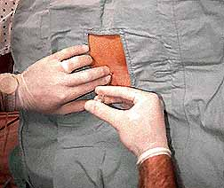
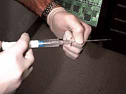

The Tuohy needle is advanced with the bevel facing cephalad through the skin until it is firmly engaged in the supraspinous and interspinous ligaments. The distance to the epidural space can be as little as 2 cm in some individuals.
